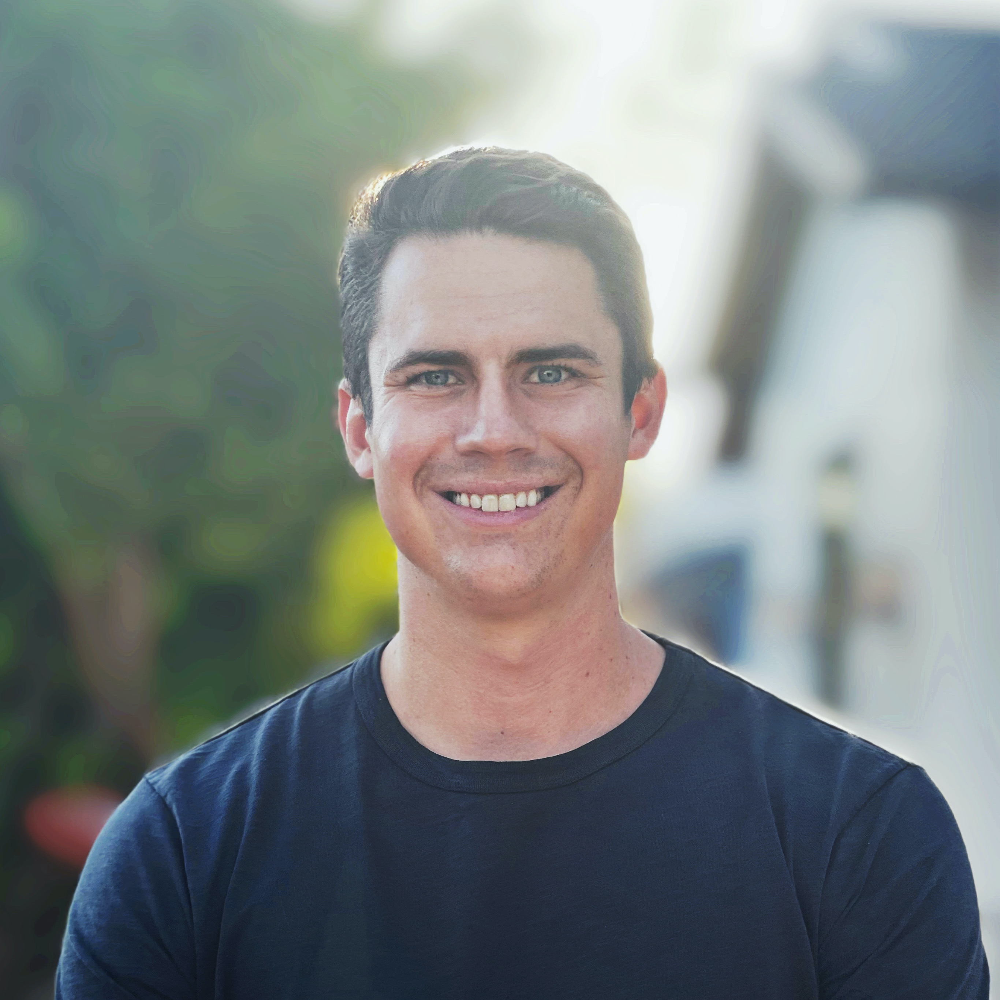

John Josi
John was born and raised in the Bay Area, moving to San Francisco after graduating from UC Berkeley alongside Chandler and Farbod. He’s held roles in product and commercial strategy, operations and supply chain management, and marketing and advertising. He previously worked in the advertising and Tequila industries, before staking his banner in FinTech. His discerning sense of what makes good Tequila is unparalleled.
Chandler Kowtko
Chandler spent his early career in the Bay Area in and around wildly ambitious companies across a wide variety of roles, verticals, and stages. 7+ years of finance, ops, product, sales, data science, and software engineering experience in industries such as manufacturing, supply chain, automotive, energy, healthcare, aerospace, telecom, consumer app, and ad networking. Eager to help daring people create the future.
Farbod Nowzad
Farbod is the first Data Science graduate from UC Berkeley and is deeply passionate about new technologies and especially their application to consumer products. He has previosuly spent time in software engineering as well as data science roles and now focuses on product design and backend engeering through the lens of a founder. He is passionate about contemporary art, jazz music and coffee.